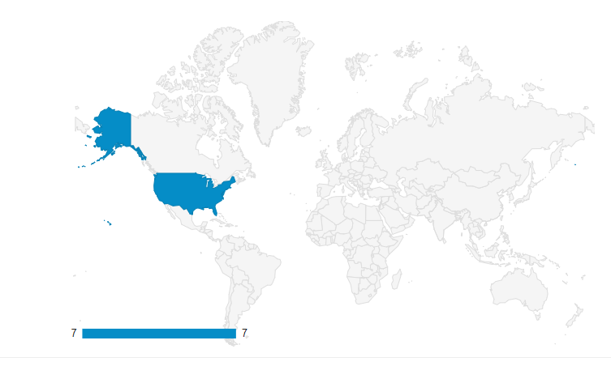
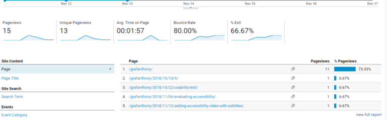

Just Add Analytics
Just Add Analytics
And so I did.
This week we are to add Google Analytics to a website we are managing to collect data on how the
users engage with the site. I, of course, decided to add Google Analytics to this journal here.
Here are some questions and my best guesses to these questions.
Questions
- Who is coming to my site? Where are they coming from? What is the Bounce Rate?
- How did they get here?
- What is my most popular page?
Best guess answers
- I would suspect mid-20s to late-30s. Basically classmates and friends who I bugged. I think
my Bounce Rate would be pretty high. According to one of the additional readings for this
week, blogs usually have a pretty high bounce rate and most visitors usually just check out
the latest post.
- I would assume they arrived to my site from a link that was provided to them.
- I think the most popular would be the latest post. In this case, the Adding Accessibility
post.
Setting up Google Analytics
The set up was pretty straightforward and I didn’t run into any complications. It was a little
hard for me to understand everything by watching those videos the first viewing. It made a lot
more sense when we had the little breakthroughs. I read the supplemental reading, Web Analytics
Demystified and rewatched the videos and it made a lot more sense to me. It will still take me a
long time to be close to mastering Google Analytics but we need to start somewhere.
Results
Who is coming to my site? What is the Bounce Rate?
I am not expecting much just yet. I can’t imagine a lot of traffic to this page without me
sending people links, which is what I eventually did.

This is kind of what I expected. I only had 7 user, 6 of which were new. There were 10 sessions
which averaged about 1.43 sessions per user. There were 15 pageviews and 1.5 pages per session.
Finally, now I know how much my friends and classmates love me because I have an average of 1
minute per session and an 80% bounce rate. I am not too bummed about he Bounce Rate because it
is a blog.
I don’t have any data for age or gender. It kind of makes me wonder if I did something wrong. I
enabled Demographics and Interest Reports so maybe I need to wait for that information to get
collected or it could be due to how low my traffic is to the site.

All of my users are from the United States. One of the users I’ve asked to visit my page was
from Holland but I think I remember him saying he was visiting the States.

If I dig a little further I can see that most of the users are from a few cities in Washington
State and one city is “not set”.
How did they get here?

According to the Acquisition Overview report, 5 of the 7 users were direct while 2 were social.
This is due to a combination of texting my link to people and asking people on my program’s
Slack page and messaging people on Facebook. I am not surprised by these results.

What is my most popular page?

Looking at the Behavior Overview report, aside from the main blog page, three pages each had one
view: Usability Test, Evaluating Accessibility, and Adding Accessibility Video with Subtitles. I
did notice from this report that there is a fourth page that is missing a title which I will go
back and fix.
Conclusions
I have a long way to go to really evaluate Google Analytics on my page. This is a small piece of
a much bigger puzzle. Through time I will understand how to collect data better but I will also
need to keep asking individuals to visit my page and click around. I tried to come up with about
five questions but I wasn’t quite sure what I could or wanted to collect. When I get a chance I
may add some tags to these posts so this page may come up in a search. The post I have in mind
is the one about Vinyl Me Please. Google Analytics isn’t as daunting when you start clicking
around and understand what you are looking at. I had fun with this project.